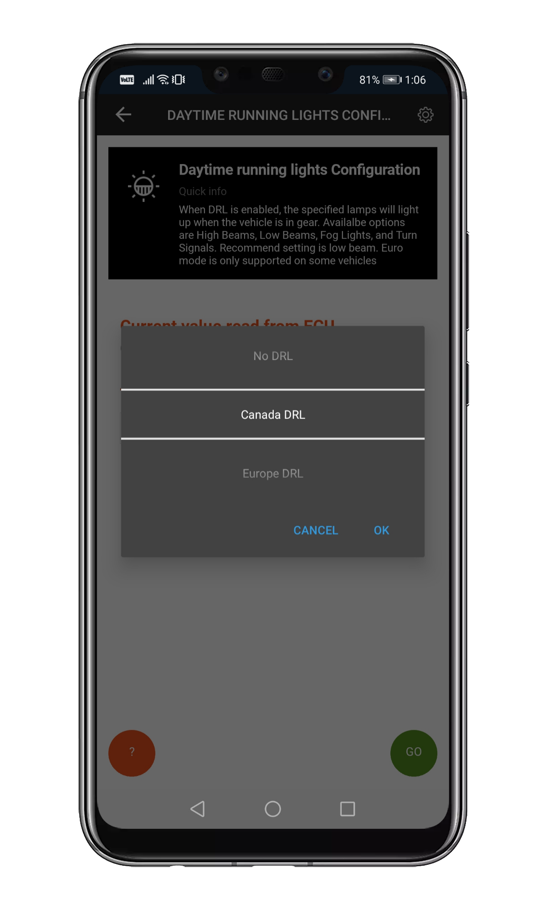
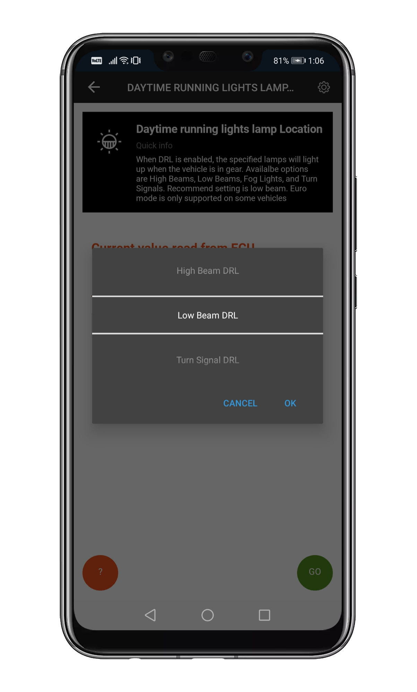

Common Adaptations¶
Adaptation section of the app is where you can make permanent (in most cases) changes to your vehicle configuration. Below you will find a step-by-step guide for some of the most common adaptations. These steps are the same for most vehicles.
TPMS - Tire Pressure Monitor System¶
There are two types of the TPMS: Standard and Premium. They both monitor tire pressure, but the premium version is capable of displaying more details, like current pressure on the EVIC (the electronic display in the instrument cluster). The basic TPMS version was installed up to around 2011 in Wrangler JK, and most other vehicles past 2012 have the premium variant.
Note
TPMS is slow to respond to changes. It has it’s own cache and can remember multiple settings. Either be patient, or reset the TPMS after applying changes - see details below.
Disabling TPMS¶
That’s the most basic change. If you want to disable the system completely it is advisable (though not necessary) that you have a proper tire pressure before you begin, i.e. no warning is up.
Connect to your vehicle
Open Adaptation
Open TPMS settings
Set the following, if present (these options’ naming varies from vehicle to vehicle):
TPMS On/Off: deactivated
TPMS Premium On/Off: deactivated
Base TPMS system present On/Off: deactivated
TPMS System present On/Off: deactivated
Premium TPMS System present On/Off: deactivated
Don’t worry if deactivating some of these does not work. This only means that the setting is present in the vehicle software, but this particular model doesn’t use it.
Reset the TPMS. On most vehicles disconnecting the battery for a few minutes resets the TPMS, hower some newer vehicles have others systems relying on a constant power supply, so instead you can use !Restart all ecus option (usually available in Miscellaneous Settings section).
Changing TPMS thresholds¶
This is a simple change, and again - it is highly advisable to not have any TPMS warnings active.
Connect to your vehicle
Open Adaptation
Open TPMS settings
Set TPMS thresholds in the following:
TPMS Threshold: for vehicles equipped with the basic version
TPMS Threshold - EVIC version: well… yes, for vehicles with the premium version
Light Load Inflation Pressure Front / Rear Tire: for vehicles that have a load sensor (Gladiator, RAM trucks). This value is used as the minimum pressure when the vehicle is lightly loaded
Max Load Inflation Pressure Front / Rear Tire: for vehicles that have a load sensor (Gladiator, RAM trucks). This value is used as the minimum pressure when the vehicle is fully loaded
Reset the TPMS. On most vehicles disconnecting the battery for a few minutes resets the TPMS, hower some newer vehicles have others systems relying on a constant power supply, so instead you can use !Restart all ecus option (usually available in Miscellaneous Settings section).
Tire Size change¶
Changing the tire size works the same in all vehicles.
Attention
Make sure your engine is NOT RUNNING
Connect to your vehicle
Open Adaptation
Open Tire & Axle settings.
Set Tire Size:
Choose a value from the drop-down list. It represents a tire diameter in inches.
Note
If you pick a value that matches your tire size exaclty, your speedometer will be showing a higher reading than your GPS. That’s normal - your factory wheels with factory settings worked the same. Blame the law-makers (At least in the EU). We recommend setting a value that is about 0.5 inch smaller than your actual tire size.
If you enabled it in App & Adapter settings, you will have manual input availabe. This however is wheel circumference in mm. Not recommended.
With manual input enabled you migth get an error when trying to set a value from a drop-down. In that case, disable manual input.
Disconnect, restart your vehicle. No ECU reset required.
Notes:¶
Some vehicles (especially the more “civlian” ones) have a max tire size value they can handle. You can set a higher one, but the ABS module will throw a warning on your dash. Decrease the tire size.
If you have any errors after setting the tire size (including because of the issue above):
Connect to your vehicle
Run Advanced Scan
Clear the codes
Fix the tire size setting
Restart the vehicle and see if the problem is fixed
DRL - Daytime Running Lights setup¶
A daytime running lamp (DRL, also daytime running light) is an automotive lighting on the front of a roadgoing vehicle, automatically switched on when the vehicle’s handbrake has been pulled down and is in drive, emitting white, yellow, or amber light. Their job is not to help the driver see the road but to help other road users see the vehicle.
Important
When you change DRL settings Engine should be OFF and ignition set to RUN
When you try to test DRL start car and release emergency brake and put your gearbox in to Drive. On Manual gearbox you only need to release emergency brake.
DRL Configuration & Customization¶
Slide to adaptation section and locate DRL – Day time running lights – settings

Now we have to set up DRL lights – lets start with Daytime Running Lights Configuration & Daytime Running Lights Location

First start with Daytime Running Lights – Configuration. Choose Canada DRL and update ECU.
Now, it’s time to set Day Time Running Lights Location – start with Low Beam and update ECU.
Test your lights¶
Start the car and release emergency brake put your gearbox in to Drive “D”. On Manual gearbox just release emergency brake.

{kind=link}
{kind=link}
{kind=link}